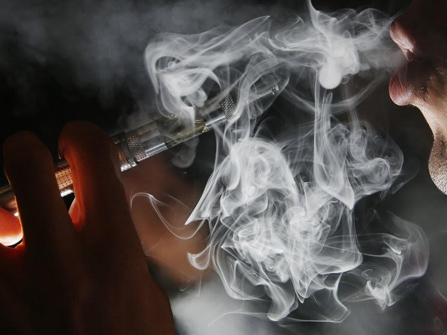

* Vaping- The 2017 National Youth Tobacco Survey found that 11.7 percent of high school students and 3.3 percent of middle school students used e-cigarettes in the last 30 days, compared with 1.5 percent of high school and 0.6 percent of middle school students who reported current use in 2011.
* Smoking- the study of more than 200,000 people, published this week in BMC medicine, found about 67 percent of smokers perished from smoking related illness.
* Drinking- teen alcohol use kills 4,700 people each year. That’s more than all illegal drugs combined!
Why do people do this?Fewer people are using them to quit smoking, and more people are using them to boost their social image; a new study finds on vaping. The decision to drink alcohol will depend on the value that the person attributes to drinking alcohol—to elevate positive mood, alleviate negative mood and anxiety, or increase confidence—and the person’s expectation that these outcomes will actually happen. In all, people do this based on peer-pressure, or their belief that reality will meet expectation.
- using an e-cigarette; a handheld battery-powered vaporizer that simulates smoking by providing some of the behavioral aspects of smoking is “vaping”.
Vaping in teens
The US Food and Drug Administration (FDA) has declared teen use of electronic cigarettes to be at “epidemic proportions.”  The agency also told e-cigarette manufacturers that if they didn’t stop marketing to minors that their flavored products will be pulled from the market. Teen vaping is a concern because the developing adolescent brain is particularly vulnerable to addiction.
Dangers* The area of the brain responsible for emotions and controlling our wild impulses is known as the prefrontal cortex; It's very vulnerable to nicotine's effects
* It also has flavorings including diacetyl, which has been linked to lung disease.
* Ultrafine particles that can be inhaled deep into the lungs, flavors such as diacetyl, a chemical linked to serious lung disease, volatile organic compounds, heavy metals like tin, lead
* Certain e-cigarette products can be used to deliver other drugs like marijuana; and lead to an addiction with behvaior risks
- the practice of smoking tobacco and inhaling tobacco smoke.
AddictionsAnyone who starts using tobacco can become addicted to nicotine. Studies show that smoking is most likely to become a habit during the teen years. The younger you are when you begin to smoke, the more likely you are to become addicted to nicotine.
According to the 2014 Surgeon General’s Report,(SGR); about 3 out of 4 high school smokers will become adult smokers – even if they intend to quit in a few years.
EffectsSmoking can cause lung disease by damaging your airways and the small air sacs (alveoli) found in your lungs; like COPD, which includes emphysema and chronic bronchitis.. Cigarette smoking causes most cases of lung cancer.
* chest pain
* shortness of breath
* persistent cough
* coughing up blood
* frequent colds
* upper respiratory infections
* persistent hoarseness
* difficulty or pain on swallowing
- the consumption of alochol.
AlcoholismA chronic disease characterized by uncontrolled drinking and preoccupation with alcohol.
Symptoms include repeated alcohol consumption despite related legal and health issues:
* Whole body: blackout, dizziness, shakiness, craving, or sweating
* Behavioral: aggression, agitation, compulsive behavior, self-destructive behavior, or lack of restraint
* Mood: anxiety, euphoria, general discontent, guilt, or loneliness
* Gastrointestinal: nausea or vomiting
* Psychological: delirium or fear
Ways to Overcome this
Treatment
* counseling by a healthcare professional
* a rehab program in a hospital or medical facility
* medications to reduce the desire to drink